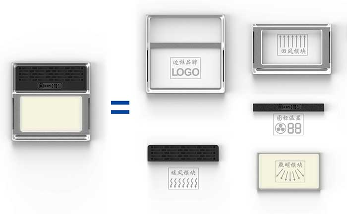
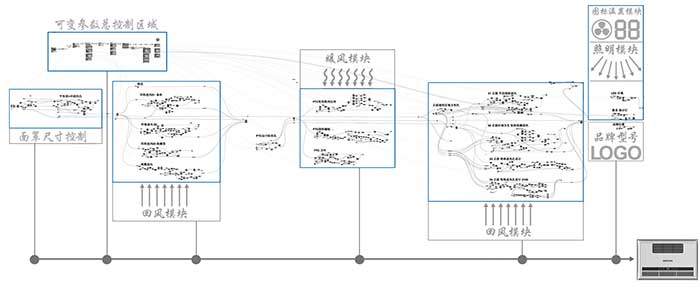

▼▼外观数据库建立后，可快速完成工程项目所需面罩外观
浴室吊顶暖风机在工程项目的销售是公司的主要渠道。工程项目有其自身的特点，针对工程的特点，创新的设计了一套面罩外观程序。将面罩分解为几个元素，单独设计成模块。通过参数辅助设计实现每个模块的外观调整。最终将所有元素有机的组合起来，形成最终的面罩外观。此程序可以根据每个项目的具体要求，快速有效的输出大量的面罩款式供项目方评审选择，实现又快又好的面罩设计，极大的提高了公司产品竞争力和时间效率。
▼▼面罩外观特征分解。
工程项目上普遍采购的暖风机面罩有着特定的功能和组合方式。通过将这些特征分解为单个模块，并对每个模块独立设计造型款式，最后快速的组合搭配。最终实践证明这种方式在设计上是可行的，在销售竞标中同样是可行的，而且更为高效。
▼▼热风出口的模块化设计。
每种热风出口的样式有着独立的一套程序，随着参数不断的调整，热风出口的外观也随即变化。
▼▼回风进口的模块化设计（四周环形回风）。
▼▼回风进口的模块化设计（面罩正面回风）。
同理，回风的风口样式同样被模块化设计
▼▼串联起所有特征的模块。
其他特征也同样被模块化设计后，将全部模块串联起来，通过相应参数的调整，快速组合生成最终面罩三维数据。不同的设计参数将会得到不同的外观设计方案。
▼▼每个外观特征可单独增加新的设计方案。
每个特征模块可以不断设计新的方案再添加到主程序里，形成一个不断扩充的数据库。而新式的面罩外观也会成几何级的增长。
▼▼动图演示设计概念
Industrial Design